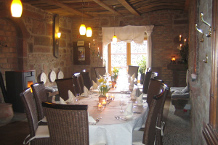
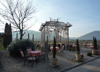

The Seminar Banquet is scheduled to be held on Monday, May 12, 2012 at 18:30 at the Vinery Marienhof in Flemlingen, Palatinate and include wine tasting.
This Banquet is made possible thanks to the generous support of the Seminar sponsors.
Since 1289 wine production with passion, dedication and fun is part of the family Minges, the owners of the Vinery Marienhof.
In the early 60s Rudolf and Agnes Minges settled with their winery in the middle of the vineyards, outside Flemlingen and expanded continuously the permanent establishment.
|  |  |
The bus tour to the seminar banquet starts directly after the first day workshop from KIT Campus North. On the way back the bus provides an additional stop in front of Hotel Kübler in Karlsruhe.